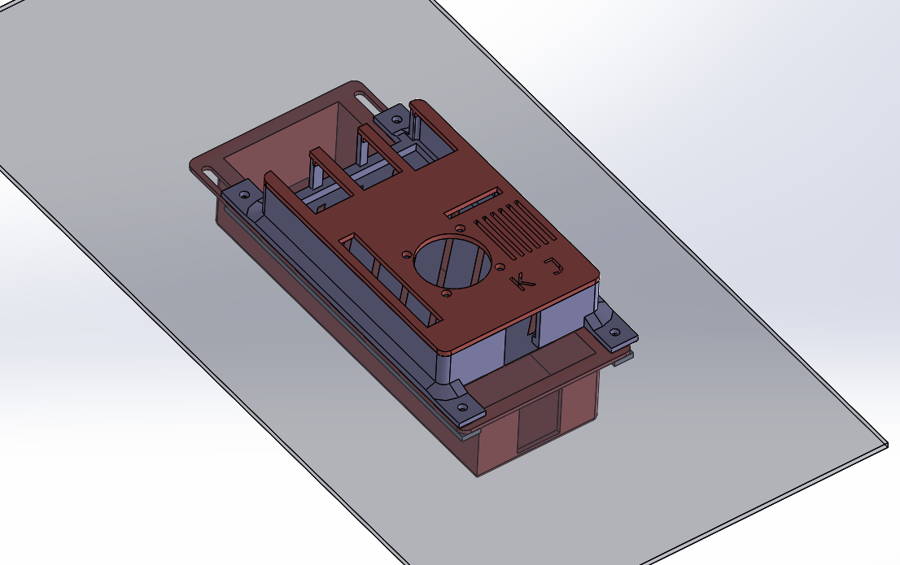
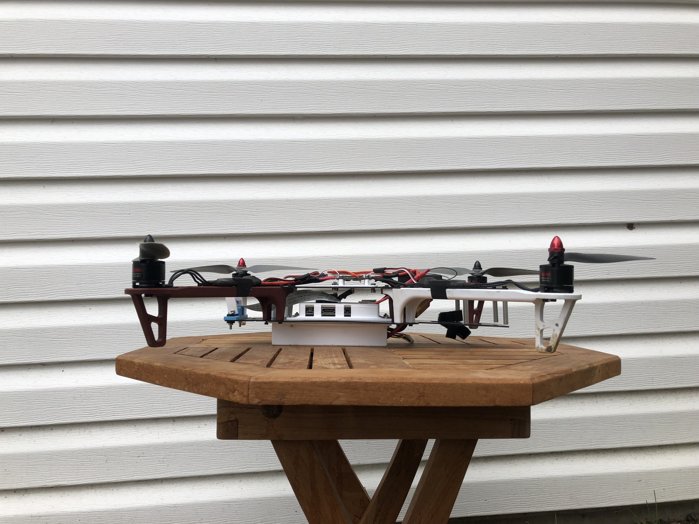
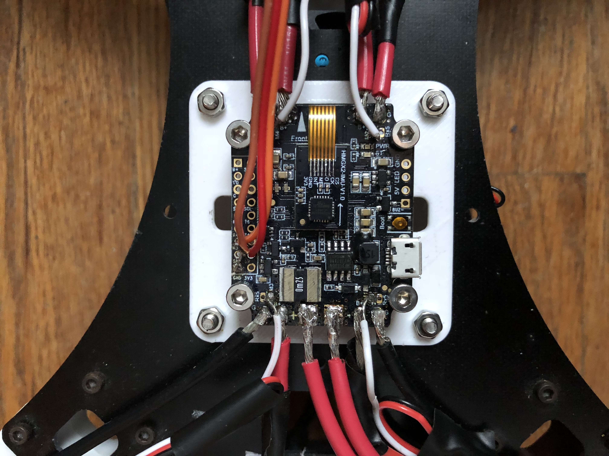
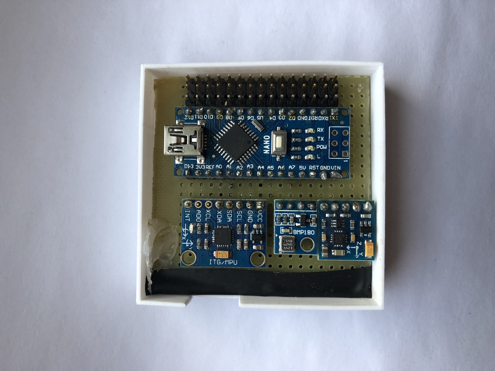

Object Tracking Drone
Goal
Create an autonomous drone from scratch that can detect and follow coloured objects.
Timeline
June 2017 - Present
The Journey This Far:
Overview
Code and CAD models for this project are here. I'm trying to wrap this project up before the new year.
After I decided to build a drone from scratch using an Arduino UNO as the flight controller, I decided to take on a bit more of a challenge. I used a Raspberry Pi with OpenCV for the computer vision component of the project. I used serial communication to interface the Raspberry Pi and (now) a BetaFlight flight controller, which is much more stable than the Arduino was. The Raspberry Pi detects and objects and sends the position to the flight controller via the Multiwii Serial Protocol. Based on the position of object in the frame, PID controllers move the drone so as to place the object in the middle of the image frame, at a certain distance away.
Technologies Used
Project Log
Testing V2 and Tuning PID Controllers (11/11/2018)
So now that the software is pretty much complete, I spent the weekend tuning the PID controllers for all axes and the altitude hold mode. Since the software only controls the pitch and yaw components of the drone, the drone should be able to hover almost still, especially in the roll and Z directions, which aren't controlled by software.
The drone is flying super well with the new flight controller and better centre of gravity. Planning on testing an autonomous hover sometime this week, to get an appropriate height for the drone.
Designing new Components (10/19/2018)
I realized if this things gonna fly well, it needs a lower and more centred centre of gravity. See CAD models and pictures below.
 Software Rebuild (9/26/2018)
Made the software WAY better using CMake as a build tool (I was using g++ before smh). I realized my motor control loop needed to run faster as well for the new flight controller, so I wrote a multithreaded program where one thread handles image processing and one thread handles the motor control. I'm getting about 30fps with this new software!
New Flight Controller (08/15/2018)
Took a break from this project for a while. After attempting to make a new flight controller out of an Arduino Nano, sensors and a protoboard, I found that the thing was way less stable then I wanted it to be. I was getting a lot of I2C errors and sensor problems. I decided to bite the bullet and buy a BetaFlight controller. This is a 32 bit controller instead of an 8 bit one, which means its much more stable. It also has an onboard gyro/accelerometer/barometer.
 RIP :(. I liked the idea of almost the whole drone being built from scratch, including the flight controller, but some things are better off bought. I might do a PCB design of a flight controller in the future.
First Test (21/01/2018)
This is the first test of the drone I did, using an Arduino Uno, before I switched to a real flight controller. Only the yaw PID is active.